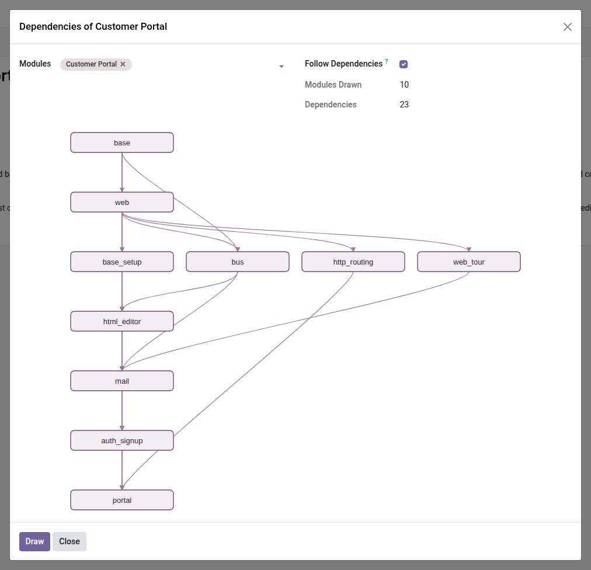

Module Dependency Graph
See at a glance what holds up what in your database, in SVG.
The Apps list tells you what is installed. It does not tell you what holds up what: which module would collapse if you uninstalled that one, how many layers separate a customization from the core, or why one update drags twelve others along with it.
What it adds
- 🗺️ One level per depth — each module sits on the level of its longest dependency chain, so that no arrow ever points back up.
- 🎯 From any module — a button on its form draws its own tree, without going through the whole database.
- 🖥️ Drawn by the server — no third-party library, no network call, nothing to load: SVG produced in Python.
- 📏 It refuses the unreadable — beyond sixty modules, the graph says so and asks you to narrow down rather than render an unusable image.
Real screenshot
What Discuss depends on
Seven modules, fourteen dependencies: base at the top, mail at the very bottom, and in between the layers you would have to remove before it.

Why install it
- A database audit, a project takeover, a risky uninstall: three moments when this drawing replaces half a day of reading manifests.
- A dependency outside the scope is left out of the drawing: never an arrow pointing to a missing node.
- Free module, LGPL-3 license — no subscription, no external dependency.
Going further
Understanding your instance also means reading its logs: who logged in, who changed what, what left the database, which scheduled actions fail. The OdooSkills range includes a complete family of operations tools. Full catalog: apps.odooskills.com.
LGPL-3 license — compatible with Odoo 19.0 Community and Enterprise. Support: apps@odooskills.com.